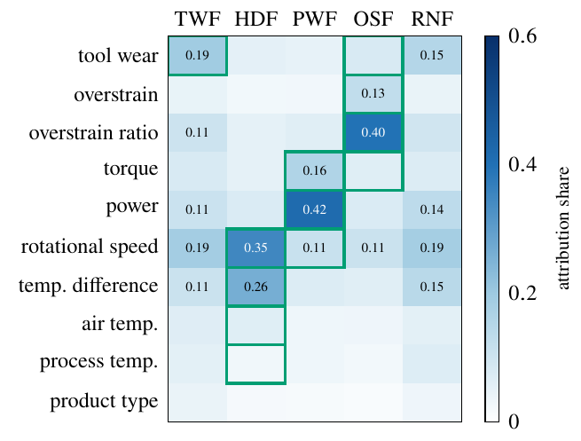
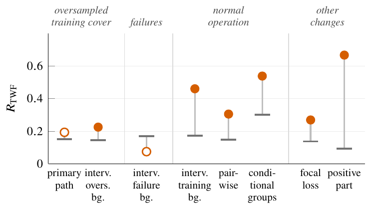
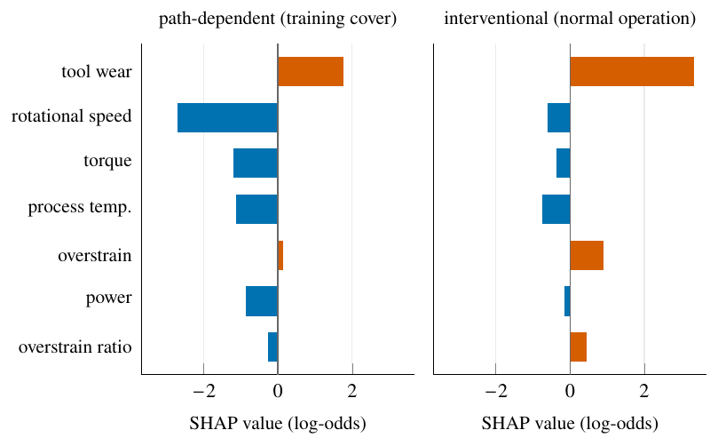
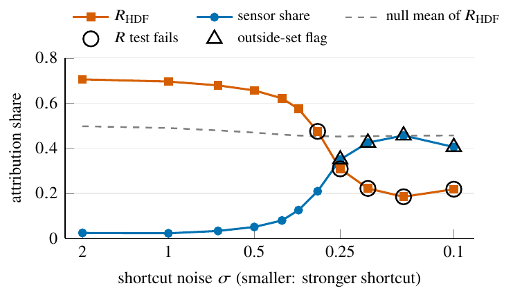
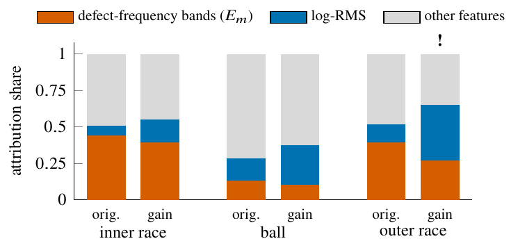
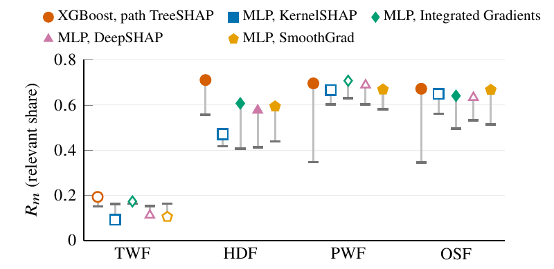

Auditing SHAP Explanations Against Known Failure Mechanisms in Predictive Maintenance
Abstract
Machine learning models predict equipment failures in industrial systems, but whether their explanations reflect the physical failure mechanism is rarely tested statistically. We propose a statistical audit that checks, for each documented failure mechanism, whether held-out SHAP attributions concentrate on the features named in that mechanism's rule. The audit uses three statistics, which measure the share of attribution on these features, how much larger this share is than on other failures, and how much any other feature gains. Each statistic is compared with pipelines retrained on shuffled labels. On the AI4I 2020 benchmark, a tuned XGBoost classifier (test F1 = 0.89) passes the audit for three of four physical mechanisms. The tool-wear result depends on the reference distribution of the explanation. It fails with path-dependent TreeSHAP and passes when attributions are measured against normal operation. A planted shortcut sensor shows that accuracy can stay high while attribution moves to a misleading feature, and that weak shortcuts, or shortcuts spread over several sensors, go undetected. On laboratory bearing recordings and simulated Tennessee Eastman process data, the audit finds attribution consistent with the specified features for inner- and outer-race faults and a reactor-cooling fault, and it flags an injected acquisition-gain shortcut although classification accuracy remains perfect. A passing audit is evidence about where attribution falls under a given mechanism map. It does not certify that the model is physically correct, and flagged features need to be investigated.
Three statistics per mechanism
Relevant share Rm
The share of attribution on mechanism m's observations that falls on its expected features Em, fixed beforehand from the failure rule or physics.
Specificity Dm
How much larger that share is on the mechanism's observations than on all other failures.
Outside-set excess Cm
How much the feature outside Em with the largest gain increases its share relative to other failures. A significant excess names a feature to inspect.
After Holm correction across mechanisms, a mechanism is flagged if Cm is significant, aligned if Rm and Dm are, and not aligned otherwise.
Main results
| Data | Mechanism | Verdict |
|---|---|---|
| AI4I 2020 (synthetic milling) | Heat dissipation, power, overstrain | aligned |
| Tool wear | not aligned with path-dependent TreeSHAP; aligned against normal operation | |
| Planted shortcut sensor | flagged once it takes ≥35% of attribution; weak or multi-sensor shortcuts go undetected | |
| CWRU bearings (laboratory) | Inner race, outer race | aligned |
| Acquisition-gain shortcut | flagged although every recording is classified correctly | |
| Tennessee Eastman process (simulated) | Reactor cooling (IDV4) | aligned |
| Condenser cooling (IDV5) | flagged on a feed valve; needs inspection |
Figures

Share of held-out attribution per feature on each AI4I mechanism; outlines mark the expected sets.

Tool wear passes against every tested normal-operation reference and fails with path-dependent TreeSHAP.

One tool-wear observation from the same model under two reference distributions.

As a planted sensor becomes less noisy, it takes attribution from the heat-dissipation features; strong versions are flagged.

CWRU bearings: an acquisition-gain shortcut moves outer-race attribution to log-RMS and is flagged, while accuracy stays perfect.
